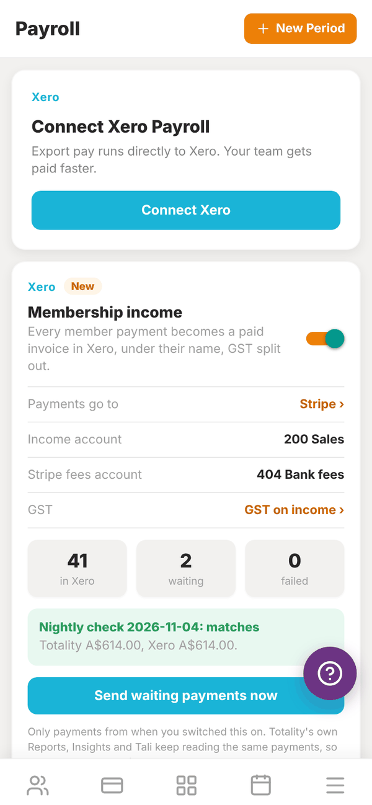
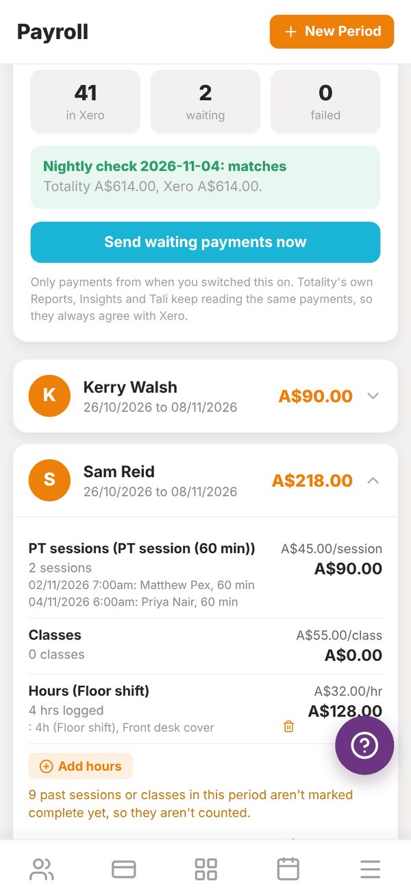
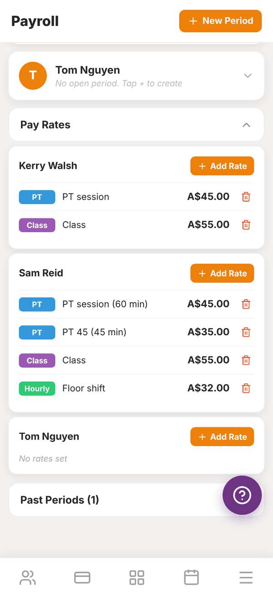

Totality for gym owners
Payroll
Set each trainer's pay rates, open pay periods, log hours, check the total, mark it paid and export it.
Payroll works out what each trainer has earned in a pay period from the work recorded in Totality: completed PT sessions, completed classes they taught, and hours you log. You set the rates once, open a pay period, and Totality adds it up. Paying people still happens through your bank or Xero.
Open More, then Staff, then Payroll. It is also under Settings, then Payroll & Xero.


1. Set pay rates#
Tap Pay Rates to open it. Each trainer has their own rates. Tap Add Rate next to a trainer and fill in:
- Rate Name: for example PT Session.
- Rate Type:
| Type | Badge | Pays |
|---|---|---|
| Per session | PT | Each completed 1:1 PT session |
| Per class | Class | Each completed class they taught |
| Hourly | Hourly | Hours you log for them |
| Custom | Custom | A fixed amount, once per pay period |
- Amount (AUD): for example 45.00.
- Session length (minutes), for PT rates only: "Sessions of this length are paid at this rate. Leave blank to pay any length that doesn't have its own rate." So you can pay 45 minute sessions at one rate and 60 minute sessions at another.
Tap Save. Tap a rate to edit it, or the bin to delete it.

2. Open a pay period#
- Tap + New Period at the top.
- Under Trainer, pick one trainer, or All Trainers to open a period for everyone at once.
- Enter the Period Start and Period End dates (YYYY-MM-DD).
- Tap Confirm.
A trainer with no open period shows "No open period. Tap + to create".
3. Check the breakdown#
Tap a trainer to open their period. You see:
- PT sessions: the count at each rate, with the date, time, client and length of each session.
- Classes: classes they taught that are marked complete.
- Hours: hours you logged, at the hourly rate.
- Any custom amounts.
- TOTAL.
Only work that is marked complete counts. If sessions or classes in the period are not marked complete yet, a note tells you how many. Settle sessions on the gym schedule (or the trainer does in their app) and mark classes complete on Classes. Anything completed after you pay a period is added to the next one, and the trainer's card shows "Has unpaid late sessions. Create a period to pay them".
4. Log hours#
For floor shifts, front desk or anything not booked in Totality:
- In the trainer's period, tap Add hours.
- Enter the Date, Hours (for example 2.5), the Rate if they have more than one hourly rate, and optional Notes (for example Induction shift).
- Tap Save.
If a trainer has no hourly rate you will see "No hourly rate is set for this trainer, so these hours can't be paid until one is added." Tap the bin next to an entry to delete it.
5. Pay and record it#
- Pay the trainer through your bank or payroll system.
- Tap Mark as Paid. Check the amount and dates in the message and tap Mark as paid.
The period moves to Past Periods with a PAID badge. The paid amount flows into your Expenses report as staff pay.
Export CSV downloads the period's breakdown as a spreadsheet, for your accountant or payroll system.
Questions#
Why is a session missing from the total?
It is not marked complete. Sessions booked with no credit stay "pending settlement" until they are cashed off or marked complete. See Gym schedule.
Does payroll pay my trainers automatically?
No. Payroll works out what they are owed. You pay them yourself, or export a draft pay run to Xero.
Can I see past pay periods?
Yes, under Past Periods at the bottom.
Does Payroll handle tax and super?
No. Totality works out gross pay from your rates. Tax, super and payslips are handled in your payroll system or Xero.